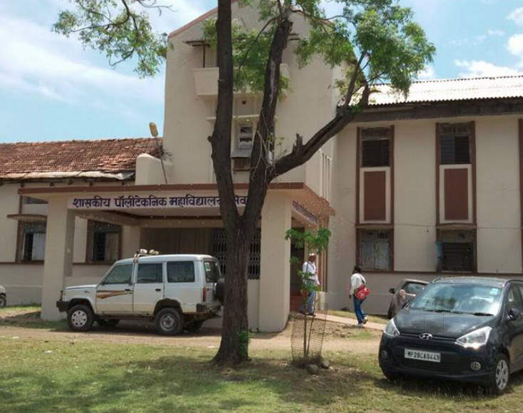

There are many polytechnic institutes in our country that gives you dynamic and progressive learning environment. Read this article to know, what is polytechnic? what are advantages of polytechnic? etc.
If you cannot continue your further education due to financial crisis or any other reason and you are stuck at certain point of time in your life, then doing a polytechnic course in your area of interest can be the best idea. If you are employed in any sector and unskilled then doing polytechnic can increase your salary. Even you can start your own business when the polytechnic course is done. There is vast career opportunity after this course depending on your specialization.
A polytechnic education gives you experience within a dynamic and progressive learning environment. The polytechnic institutes are dedicated to offer a number of professional courses under one roof. The courses at polytechnic help students to start his or her profession, either through a job at a well-reputed company or by starting his own business.
There are two ways to earn a graduate degree in engineering; either two years of higher secondary education followed by four years of engineering programme or three years of engineering education after three years of study in a polytechnic college. That means you have to spend minimum 6 years in both ways to earn a graduate degree in engineering.
But pursuing engineering programmes after polytechnic education carries definite advantage. Firstly, it costs less in pursuing three years polytechnic course than to normal education. Typically, the whole course costs Rs 10,000. So, a student from middle class background can easily afford the course. Secondly, if the student is unable to continue his education, then he can get into job and then pursue engineering on a part-time basis without causing financial burden on the family.
There are many courses in Polytechnic. Each course provides vast job opportunities in various fields. They join the company as trainee Engineer and can be promoted to Department Manager with attractive salary.
There are many career opportunities available to you in government sector or private sector after completing polytechnic course. Some companies even prefer to recruit polytechnic students rather than engineering students. Students can also get lateral entry in BTech(2nd year) after successfully completing diploma course.
In private sector you can get the job at the companies like Bombay Dyeing, Maruti Suzuki, Tata Motors, HCL, Infosys, Siemens etc. related to your field. At entry level in these companies you can earn approx 10,000 INR. Polytechnic Engineers work as product developer, service engineer, assistant designer, analysts, junior engineer, executive etc. You can also work as lab assistant at college. There are also excellent career opportunities in the gulf countries for polytechnic engineers.